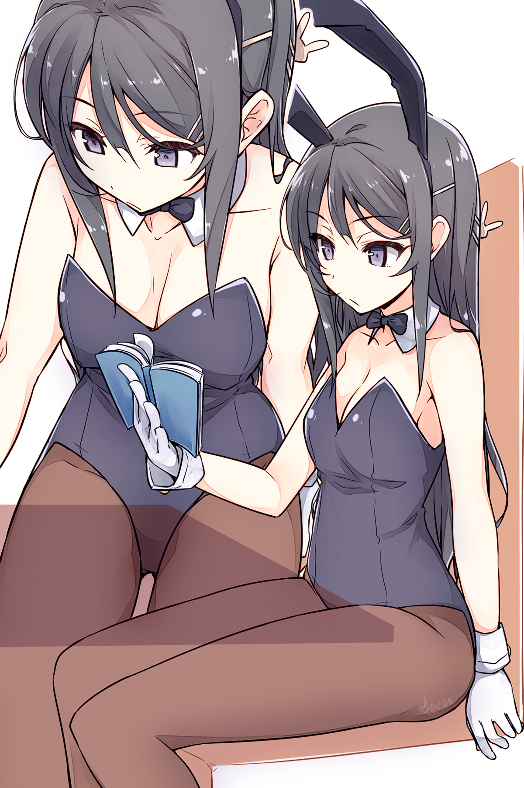
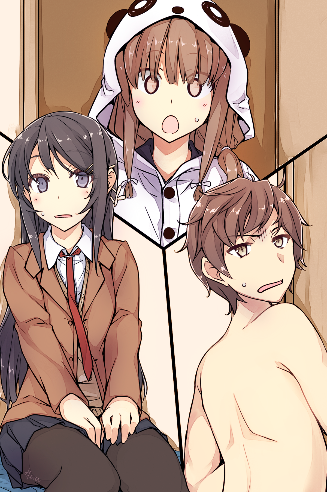

Том 1 Розділ 1
Частина 1
Одного разу Сакута Азусагава зустрів дику дівчину-кролика.
Це був останній день Золотого Тижня*.
[П/П: Японський "Золотий тиждень" - період з кінця квітня до перших чисел травня, на який припадає одразу кілька державних свят. У правильному поєднанні з вихідними днями "Золотий тиждень" перетворюється на один із найтриваліших відпускних сезонів у Японії].
Двадцятихвилинна поїздка на велосипеді привела його прямо з квартири до станції метро Сенандай, де перетинаються Лінія Еносіма, Сотецу Ізуміно та Йокогамський метрополітен. Станція була оточена спальними районами, а висоток було вкрай мало.
Перебуваючи ліворуч від станції, Сакута попрямував у бік світлофора. До місця його призначення - бібліотеки - залишалася всього хвилина.
Стійка для велосипедів була заповнена лише наполовину, тож він припаркувався і попрямував усередину.
Хлопець часто приходив сюди, але характерна тиша всередині завжди змушувала його злегка нервувати. Його тіло трохи напружилося, коли він увійшов усередину.
Бібліотека була найбільшою в окрузі й завжди мала велику кількість відвідувачів. Одразу за входом розташовувалася стійка з журналами та газетами. Сакута помітив знайомого літнього чоловіка, який похмуро вивчав спортивну газету. Його улюблена команда, мабуть, програла.
Пройшовши повз стійку, він помітив, що майже всі столи були зайняті. Старшокласники, студенти коледжів і навіть дорослі з ноутбуками.
Сакута лише глянув на них, а потім попрямував до полиць, заповнених примірниками сучасних романів у твердій палітурці. Його очі пройшлися по корінцях книг, розташованих в алфавітному порядку, коли він вивчав розділ, що починався з "Ю". Пошуки змусили його пригнутися. Його зріст становив п'ять футів вісім дюймів, і навіть найвищі полиці були йому по пояс.
Незабаром він знайшов книгу, про яку просила його молодша сестра. Автора звали Канна Юігахама. Вона називалася "Принц, який дав мені отруєне яблуко". Якщо хлопець правильно пам'ятав, ця книжка вийшла близько чотирьох чи п'яти років тому, але його сестрі сподобалася інша робота авторки, і вона була сповнена рішучості прочитати решту її творів.
Сакута потягнувся до трохи пошарпаного корінця і дістав книжку з полиці.
Озирнувшись назад, він мав намір попрямувати прямо до стійки реєстрації та видачі книг, але тут перед ним постала вона.
Там, між книжковими полицями, стояла дівчина-кролик.Він кілька разів моргнув. Очевидно, йому нічого не ввижалося. Вона явно була справжньою.
Блискучі чорні туфлі з високими підборами. Чорні панчохи на її довгих ногах були досить прозорі, щоб він міг розрізнити колір її шкіри під ними. Чорний леотард, що підкреслював її фігуру - струнку і спокусливу, створював помітну, але не надто зухвалу улоговинку на бюсті.
Білі манжети надавали сміливого акценту її зап'ястям, а на шиї красувалася чорна краватка-метелик.
За його припущеннями, зростом вона була не більше п'яти футів п'яти дюймів. Вольові риси обличчя плюс нудьгуючий вираз надавали їй зрілої чарівності та стриманості, які він знаходив дуже привабливими.
Спочатку Сакута припустив, що хтось, мабуть, знімає все це. Він озирнувся на всі боки, але ніде не побачив знімальної групи. Вона була тут зовсім одна. Загублена й самотня. Дивовижно. Справжня дика дівчина-кролик.
Звісно, її зовнішній вигляд одразу впадав у вічі, тим паче в такому місці, як бібліотека. Абсолютно недоречна... насправді, Сакута міг придумати тільки кілька місць, які можна було б вважати природним середовищем існування дівчини-кролика. Можливо, казино у Вегасі або магазини з поганою репутацією? У будь-якому разі, дівчата-кролики безумовно не мешкали в місцевій публічній бібліотеці.
Хто б міг подумати, але це ще не найдивовижніше, що тут відбувалося.
Ця дівчина була одягнена в найпривабливіше вбрання, яке тільки можна собі уявити, але ніхто не дивився на неї.
- Що за?.. - сказав він уголос.
Бібліотекар, що стояв поруч, кинув на нього погляд, який ясно говорив: "Тсс!". Хоча хлопець з повагою схилив голову у відповідь, він чудово розумів, що увагу слід звернути на зовсім іншу людину.
Здається, він почав розуміти, що до чого.
Нікому не було діла до дівчини-кролика. Вони не звертали на неї жодної уваги, не здіймали шуму і, здавалося, навіть не помічали її присутності.
Зазвичай, якби повз пройшла дівчина в такому привабливому вбранні кролика, то навіть та студентка, що бореться з шістьма кодексами японської правової системи, підняла б очі. Старий зі спортивною газетою зробив би вигляд, що продовжує читати, крадькома поглядаючи на неї. А бібліотекар підійшов би і ввічливо запропонував змінити одяг.
Щось було не так. Зовсім не так.Він відчув, як по спині побігли крапельки поту.
Поки він з жахом спостерігав, дівчина-кролик узяла том з однієї з книжкових полиць і попрямувала в дальній кут бібліотеки.
Дорогою вона грайливо показала язика одній зі студенток коледжу і спробувала закрити руками планшет одному бізнесменові, який так само, як і студентка, не виявив жодної уваги до її персони. Усвідомивши, що її так ніхто й не помітив, вона посміхнулася.
Потім вона зайняла місце в самому кінці залу.
Навпроти сидів студент, занурений у дослідження. Він так її й не помітив. Дівчина-кролик, побачивши, що її костюм сповз у ділянці грудей, швидко поправила його, але студент ніяк на це не відреагував. Навіть попри те, що його погляд був спрямований просто на неї.
Через деякий час хлопець закінчив свої дослідження і зібрався йти, нібито нічого незвичайного не сталося. Потім він пішов, знову ж таки, немов нічого не помічаючи, і навіть не намагаючись поглянути на її декольте.
- ...
Сакута на мить завагався, але потім сів на місце, яке звільнив студент, що пішов.
Він дивився прямо на дівчину-кролика, що сиділа навпроти, вивчаючи м'який вигин її оголених плечей. Вони слабо рухалися з кожним її зітханням, доволі незвичне видовище для бібліотеки - символу знань і культури. Сакуті здавалося, що він божеволіє.
Через кілька хвилин вона відірвала погляд від книги, і їхні очі зустрілися.
- ...
- ...
Вони обидва двічі моргнули.- Дивно, - почала вона пустотливим голосом, - ти все ще можеш бачити мене.
Це прозвучало так, ніби інші на це були не здатні.
Але на думку Сакути ці слова звучали правдиво. У цей самий момент, якою б дивною не була її присутність, здавалося, що жодна людина не змогла помітити її.
- Побачимося.
Дівчина закрила книгу і встала.
На цьому все мало закінчитися. Він міг би звести все, що трапилося, до жарту, а потім розповісти своїм друзям. Але Сакута не міг залишити все як є.
Тому що він знав її.
Вони разом навчаються в старшій школі Мінагахара. Вона - третьокурсниця, на рік старша, його семпай. Сакута навіть знав її повне ім'я.
Май Сакурадзіма.
Так звали дівчину-кролика.
- Гей.
Якраз перед тим, як її фігура почала зникати серед полиць, він крикнув їй услід.
Май зупинилася і кинула на нього питальний погляд через плече.
- Ти ж Сакурадзіма, вірно? - запитав він, намагаючись говорити якомога тихіше. - З третього року?На її обличчі промайнуло здивування.
- Якщо ти мене знаєш, ймовірно, ти зі старшої школи Мінагахара?
Вона знову сіла, оглядаючи його з ніг до голови.
- Сакута Азусагава, клас 2-1. Азусагава як "Зона відпочинку Азусагави". А Сакута - "Квітуче Таро".
- Мене звати Май Сакурадзіма. Май як у "Май Сакурадзіма" і Сакурадзіма як у "Май Сакурадзіма".
- Так, я знаю. Ти ж знаменитість.
- Саме так.
Здавалося, вона втратила до нього будь-який інтерес. Поклавши руку на щоку, вона перевела погляд на найближче вікно. Нахилившись, вона продемонструвала своє декольте. Саме на нього й дивився Сакута. Це було вартісне видовище.
- Сакута Азусагава.
- Так?
- Дозволь мені тебе попередити.
- Попередити?
- Забудь про те, що ти бачив сьогодні.
Він було відкрив рота, але перш, ніж він встиг щось сказати, вона знову заговорила:Це було правильно помічено.
- І ще, ніколи більше не розмовляй зі мною.
- ...
- Відповідай, якщо зрозумів.
- ...
Коли він промовчав, Май виглядала роздратованою. Потім її вираз обличчя повернувся до звичайного, нудьгуючого вигляду. Вставши і поклавши книгу назад на полицю, вона попрямувала до виходу.
Люди, повз яких вона проходила, продовжували ігнорувати її існування. Навіть коли вона проскочила повз стійку видачі книг, бібліотекарі продовжували працювати в цілковитій тиші. Тільки Сакута не міг відірвати очей від цієї пари чарівних ніжок, обтягнутих панчохами.
Щойно вона повністю зникла з поля зору, Сакута звалився на стіл.
- Забути? - пробурмотів він, - Як можна забути це вбрання?
Оголена шкіра від плечей до грудей. Коли вона притулила руку до щоки, вигини її грудей стали виразнішими. У ніс вдарив приємний запах. Її м'який голос був ледь вловимий, щоб його міг почути тільки Сакута. Ці ясні очі, що дивляться прямо на нього. Усе це сильно збуджувало.
Він не хотів вставати з місця, боячись, що оточуючі помітять його стан.
Схоже, він застряг за цим столом на якийсь час.
Йому потрібно було багато про що розпитати Май. Але він був змушений відкласти ці питання на інший день.
Частина 2
- Зрозумів! Мабуть, це були дівчата-кролики! - пробурчав він, намагаючись сісти. - Мм?
Але все пішло не так, як планувалося. На його лівому плечі відчувалася величезна тяжкість.
Відкинувши ковдру, він зрозумів у чому справа.
Поруч із ним згорнулася калачиком дівчина в піжамі, обхопивши його за ліву руку, вона спокійно спала. Мабуть, відкинувши ковдру, вона замерзла і, щоб зігрітися, довелося ще тісніше притиснутися до Сакути.
Це була його сестра, Каеде. Цього року їй виповниться п'ятнадцять.
- Прокинься, Каеде. Уже ранок.
- Але тут так холодно...
Вона, здавалося, не рухалася, тож він узяв її на руки й підвівся з ліжка.
- Чорт забирай, яка ж ти важка!
Каеде була зростом п'ять футів чотири дюйми, досить висока для свого віку, і останнім часом вона швидко зростала. Важкість у його руках ясно давала зрозуміти, що вона вже не маленька дівчинка.
- Половина мене складається з почуттів до братика! - запротестувала вона.
- Ти взагалі себе чуєш? Сподіваюся, друга половина - засіб від клопоту, який ти спричиняєш своїми почуттями. А, втім, якщо ти прокинулася, то вставай уже.
- Ах.
Бурчачи, вона дозволила опустити себе на землю. За останній рік її обличчя справді сильно подорослішало, і між тим, як вона виглядала, і тим, як поводилася, утворилася серйозна прірва. Те, що рік тому було б абсолютно нормальним рівнем фізичного контакту для братів і сестер, тепер безумовно викликало в Сакути дискомфорт.Напевно, їй також давно пора перестати носити піжаму з капюшоном, схожу на панду.
- Я прийшла розбудити тебе, але ти не встав, тож насправді це твоя вина.
Коли вона хмурилася, виглядала молодшою.
- Добре, але ти вже достатньо доросла, щоб займатися подібними речами.
- Проблема в тому, що я тебе збуджую?
- Та кого взагалі збудить рідна сестра?!
Він легенько стукнув її по лобі, а потім покинув кімнату.
- Гей! Зачекай на мене!
Після того як він приготував сніданок для них обох, вони разом поїли. Сакута доїв першим і почав збиратися до школи.
- Бережи себе! - сказала Каеде. Вона проводила його з посмішкою, коли той виходив з дому.
Він почав позіхати ще до того, як вийшов із житлового комплексу. Учорашній день був надто насиченим, і йому було дуже важко заснути. Дивні сни ніколи не були запорукою гарного початку дня.
Знову позіхнувши, він пішов через житловий квартал. Дорогою він мав перетнути один міст. У міру того як він наближався до станції, будівлі навколо нього ставали дедалі вищими. Люди починали товпитися, йдучи в одному напрямку.
Зрештою він дістався до головної дороги, дочекався світлофора і перейшов дорогу пішохідним переходом. Коли він проходив повз бізнес-готелі та магазини побутової електроніки, вдалині показався залізничний вокзал.
Загалом прогулянка зайняла близько десяти хвилин.На першому поверсі станції знаходилася Лінія Одавара. Потяги, що прибувають, прямують до Сіндзюку і зупиняються тут, щоб повернутися до Катасе-Еносіма. На другому поверсі були проходи до ліній Токайдо і Сенан-Сіндзюку.
Відвернувшись від турнікетів, Сакута приєднався до натовпу, що прямував угору сходами.
Він спустився проходом завдовжки під тридцять метрів, який вів до універмагу "Одавара". Не те, щоб він збирався йти за покупками. Так рано магазин усе ще був зачинений. Біля зачинених дверей він повернув ліворуч, на іншу станцію Фудзісави.
"Електрична Залізниця Еносіма". Еноден для стислості - "ден" - це перший звук у Японському слові, що позначає електричну залізницю. Це була одноколійна залізниця, що мала тринадцять станцій по дорозі в Камакуру, вся поїздка займала близько тридцяти хвилин.
Сакута доклав свою приміську перепустку і пройшов через турнікет, коли поїзд зупинився. Зелений поїзд, з кремовими віконними рамами, наче в ретро стилі. Потяги на цій лінії були короткими, лише чотири вагони завдовжки.
Хлопець пройшов платформою і сів у передній вагон.
Пасажири відрізнялися за зростом і були по-різному одягнені: хтось був у шкільній формі, хтось у робочому одязі, а хтось у діловому костюмі. До переїзду сюди Азусагава вважав, що це туристична лінія, але більшість місцевих жителів користувалася нею для щоденних поїздок на роботу.
Сакута вхопився за місце біля дверей.
У цей момент хтось заговорив із ним.
- Привіт.
Хлопець, який приєднався до нього, пригнічуючи позіхання, був доволі вродливий - якби він був представлений як особа відомого модельного агентства, у це б охоче вірилося.
У нього були різкі риси обличчя, і спочатку він міг здатися дещо відразливим, але в момент, коли він усміхався, це враження змінювалося дружелюбністю. Схоже, цей хлопець був популярний серед дівчат.
Його звали Юма Кунімі. Другорічник і новачок у баскетбольній команді. Зустрічається з дівчиною.
Зітхання...- Твоя задоволена посмішка - це останнє, що мені потрібно сьогодні рано вранці. Вганяєш у депресію.
- Так?
- Ага.
Вони базікали про те про се. Пролунав сигнал, і двері зачинилися.
Поїзд насилу набирав швидкість. Не встигнувши розігнатися, він почав пригальмовувати на підході до станції Ішигамі.
- Кунімі.
- Мм?
- Я хотів би поговорити про Сакурадзіму...
- Бідолаха.
Перш ніж він встиг договорити, Юма перервав його, заспокійливо поплескавши друга по спині.
- Чому ти мене жалієш?
- Я, звісно, радий, що ти цікавишся кимось окрім Секо Макінохари, але... Вона не твого рівня.
- Я не казав, що закоханий або збираюся почати з нею зустрічатися.
- Тоді в чому справа?- Хм... Ну, вона досить знаменита.
- Я в курсі.
Так, Май Сакурадзіма була справжньою знаменитістю. Кожен учень старшої школи Мінагахара знав, хто вона така. Цілком імовірно, що її знали від сімдесяти до вісімдесяти відсотків населення Японії. Вона була настільки знаменита, що ця цифра не здавалася перебільшеною.
- Свою акторську кар'єру вона почала в шість. Ранковий серіал за її участю отримав такий високий рейтинг, що це було схоже на золотий вік телебачення, перетворивши її на сенсацію.
Популярність різко зросла, що призвело до її появи у всіх видах фільмів, шоу і рекламних роликів. Вона була настільки затребувана, що не минало й дня без її появи на ТБ.
Звичайно, через два або три роки після її стрімкого злету, тенденція "Май Сакурадзіма повинна брати участь скрізь і в усьому" пройшла, але до цього моменту, завдяки її акторській майстерності, їй надходило море пропозицій.
У шоу-бізнесі, де не було нічого незвичайного в тому, що артисти забувалися протягом року, вона постійно працювала, коли навчалася в молодших класах середньої школи. Це саме по собі було досить вражаюче, але вона збиралася взяти ще одну велику перерву.
До чотирнадцяти років Май Сакурадзіма перетворилася на дівчинку, розумну не по роках. Головна роль у гучному фільмі викликала ще один сплеск уваги преси, настільки інтенсивний, що був час, коли здавалося, що її усміхнене обличчя було на обкладинці кожного журналу.
- Я закохався в неї ще в середній школі. Поєднання милоти і сексуальності від якого просто неможливо було встояти.
Юма був далеко не єдиним. Натовпи хлопчаків відчували те саме.
Щойно її популярність знову досягла піку - Май раптово оголосила, що бере перерву. Це було якраз перед тим, як вона закінчила середню школу. Жодної виразної причини так і не було названо і відтоді минуло трохи більше двох років.
Коли Сакута дізнався, що Май Сакурадзіма відвідує його школу, він був дуже здивований.
"Вау, знамениті люди дійсно існують", - подумав він.
- Чувак, я теж пам'ятаю всі ці чутки. Люди говорили, що в шоу-бізнес вона потрапила через "ліжко" або що вона спала з продюсером...- Ні, це було, принаймні, в середній. Насправді, найперші чутки, які потрапили на телебачення, були всі про її матір, за сумісництвом - її менеджера. Тепер вона має власну агенцію, а вона - президент компанії. Я почув про це в якійсь передачі минулого тижня.
- Хм, я цього не знав... звісно, такі чутки абсолютно безпідставні.
- Немає диму без вогню, вірно?
- Ми живемо в такі часи, коли цей "вогонь" розпалюють не самі люди.
Інформація поширюється інтернетом, як лісова пожежа. Люди в усьому світі можуть дізнатися про що-небудь в одну мить. Навіть якщо це брехня. Люди, які поширюють ту чи іншу інформацію, зазвичай не звертали уваги на факти. Їх турбувало тільки те, що вони могли пожартувати, привернути до себе увагу, розважитися або вказати на чиїсь недоліки. Нічого більше.
- Від тебе це звучить дуже переконливо...
Сакута залишив це зауваження без коментарів.
Поїзд повільно проїхав ще чотири станції: Янагікодзі, Кугенума, Шонанкайганкоен та Еносіма.
Сакута визирнув у вікно, помітивши, що вони зараз котяться тією частиною лінії, яка перетинала міську вулицю. Завжди було дивно бачити звичайні машини просто за вікнами. Але в нього ледь вистачило часу подумати про це, перш ніж вони повернулися на звичайну частину дороги.
На цій ділянці лінії будівлі були збудовані так близько до шляху руху поїзда, що здавалося, зіткнення може статися будь-якої миті. Здавалося, ніби можна висунутися з вікна і доторкнутися до стін чужих будинків, коли вони пролітають повз. Начебто гілки й листя дерев на задніх подвір'ях справді могли торкатися вікон.
Не зважаючи на подібні побоювання, потяг неквапливо прослизнув між будинками і врешті-решт сягнув станції Косігое.
- Але я ніколи не бачив її з ким-небудь у школі.
- Мм?
- Сакурадзіма. Ти ж почав говорити про неї, Сакута.— Она всегда сама по себе.
Она не вписывалась ни в свой класс, ни в школу. Такое же впечатление о ней сложилось и у Сакуты.
— Сэмпай из баскетбольной команды сказал, что после поступления, она пропустила большую часть учебного года.
— Почему?
— Работа. Она объявила о перерыве, но были контракты, которые она должна была соблюдать.
— Понятно.
Но зачем объявлять об этом публично, не закончив свою работу? Если и была какая-то причина, то ей нужно было рассказать об этом еще тогда…
— Сакурадзима начала регулярно посещать школу только после летних каникул.
— ...Кажется, ей нелегко пришлось.
Сакута мог себе представить, с чем столкнулась Май, когда приехала сюда той осенью. Ее одноклассники потратили целый семестр на формирование групп и изучение школьных иерархий.
— Об остальном ты можешь догадаться сам, — сказал Юма, явно думая о том же.
После того, как взаимоотношения в классе сформировались, было трудно их изменить или влиться в них. Все устроились поудобнее на своих местах и не хотели их уступать. Это было нормально для людей – защищать свои позиции.
Когда Май начала ходить во втором семестре, никто не знал, как с ней быть. К тому же она была знаменитостью. Всем было любопытно, но сближаться с ней было рискованно. Любой, кто попытался бы подружиться с ней, привлек бы к себе внимание. Это, в свою очередь, несло в себе высокий риск того, что люди будут говорить за их спиной такие вещи, как: «Это так раздражает...» или «Кем они себя возомнили?». Влиться в эту атмосферу для Май стало невозможно.
«Как только такое происходит... пути назад уже не будет. Такова была атмосфера в школе»Усі любили скаржитися про те, як усе нудно, бажаючи, щоб трапилося щось цікаве. Але ніхто насправді не хотів, щоб усе коли-небудь змінилося.
Сакута не був винятком. Якщо нічого цікавого не відбувалося, значить, усе було просто. Він міг розслабитися і почуватися комфортно. Немає потреби напружувати себе. Ура мирним дням!
Пролунав попереджувальний дзвінок, і двері зачинилися.
Поїзд знову почав рухатися, повільно проходячи через нові ряди будинків.
Прямо за вікном була стіна, яка незабаром змінилася іншою стіною. Стіна йшла за стіною, будинок за будинком, перериваючись лише рідкісними переходами. І саме тоді, коли здавалося, що це ніколи не закінчиться, без жодного попередження... відкрився вид.
Море. Блакитна вода виблискувала під ранковими променями сонця.
Небо. Чисте ранкове повітря і небо, що розстелялося аж до горизонту і переливалося біло-блакитними тонами.
Між ними була чітка лінія горизонту. Як за помахом чарівної палички, усі пасажири в поїзді звернули свій погляд до вікон.
Деякий час потяг ішов уздовж узбережжя Шичірігахама, звідки відкривався вид на затоку Сагамі. Видовище, що захоплювало дух, містило в собі все - від Еносіми до сліпучих пляжів Юігахами.
- Але чому ми раптом заговорили про Май Сакурадзіму?
- Кунімі, тобі подобаються дівчата-кролики? - запитав Сакута, не відриваючи погляду від виду, що відкрився.
- Не зовсім.
- Значить, ти їх любиш?
- Ага.- Гей, що за фігня? Давай викладай, - Юма ткнув його в бік.
- Якби ти зіткнувся в бібліотеці з привабливою дівчиною-кроликом, що б ти зробив?
- Поглянув би на неї ще разок.
- Зрозуміло.
- А після я б глянув ще раз, і ще, поки очі не заболять.
Це була природна людська реакція. Принаймні, природна чоловіча реакція.
- А до чого тут Май Сакурадзіма?
- Вони ніби як пов'язані, але... я не знаю.
- Я зовсім заплутався.
Юма явно вирішив, що питати про це не варто, коли Сакута так ухилявся від відповіді. Натомість він обмежився приємною посмішкою.
Потяг котився вздовж узбережжя і, нарешті, сягнув станції Шічірігагама, поруч із якою розташовувалася старша школа Мінагахара - місце, де навчається Сакута.
Коли двері поїзда відчинилися, вагон заполонив аромат морського бризу.
Натовпи студентів в однакових уніформах виходили з поїзда. Біля входу стояла самотня машина, схожа на пугало, і зчитувала квитки. Протягом дня там мав стояти черговий, але в той час, коли учні проходили повз, поблизу нікого не було.
Школа була через дорогу від станції.- Я не збираюся віддавати тобі свою сестру.
- Ну ж бо, будь чемнішим зі своїм братиком.
- У тебе вже є мила дівчина, Кунімі.
- Так, якщо вже ти про це заговорив.
- Вона б розлютилася, почувши щось подібне.
- Звісно. Камісато така мила, коли злиться. Га? Ти тільки поглянь.
Сакута простежив за поглядом Юми і побачив Май Сакурадзіму, що йшла за кілька метрів попереду. Довгі руки й ноги. Мініатюрне личко. Струнка, модельна фігура. Усі були одягнені в одну й ту саму уніформу, але на ній вона мала зовсім інший вигляд. Чорні колготки, які вона носила, спідниця, що приховує вигин її спини, піджак, що ідеально сидить, - все це здавалося абсолютно недоречним. Наче на ній був чужий одяг. Вона вчиться тут уже третій рік, але шкільна форма на Май здавалася якоюсь дивною.
Неподалік базікали три дівчини, і кожна з них виглядала набагато природніше у своїй шкільній уніформі. Першокласниця, яка з ентузіазмом вітала семпая зі свого клубу, виглядала в ній значно краще. Для порівняння, навіть той хлопець, що дружньо штовхав приятеля, порівняно з нею здавався сповненим життя.
Коротка дорога від станції до школи була заповнена учнями зі школи Мінагагара, які розмовляли і сміялися.
Але в центрі всього цього Май ішла одна, в повному мовчанні, абсолютно ізольована. Як інопланетянин, що забрів у звичайну старшу школу. Абсолютно недоречна. Гидке каченя. Цю ситуацію не можна було описати якось інакше.
Насправді, ніхто взагалі не дивився на неї. Май Сакурадзіма була просто тут, але вона не привертала жодної уваги. Ніхто, здавалося, не був схвильований, побачивши її мигцем. У школі Мінагахара це було чимось звичайним.
Май була просто тут, як повітря. Усі погодилися з цим. Це нагадало Сакуті те, що він бачив у бібліотеці, неподалік від станції Сенандай. Почуття занепокоєння виникло всередині нього.
- Кунімі...
- Так?- Так, ясно, як божий день. У мене гарний зір. Обидва ока по одиниці.
Відповідь Юми була саме такою, як він і очікував. То що ж саме бачив Сакута напередодні?
- Побачимося пізніше.
- Угу.
Цього року Юма навчався в іншому класі, тому на другому поверсі вони розділилися. Сакута попрямував до класу 2-1. Коли він дістався туди, половина учнів уже зібралася в класі.
Він сів у першому ряду біля вікна. З таким прізвищем, як Азусагава, він майже завжди сидів тут. Доти, доки не з'явиться хто-небудь із прізвищем Аікава або Аізава, він буде першим за списком. На жаль, але бути першим у цьому випадку не давало жодних переваг. Однак відтоді, як він вступив до школи Мінагахара, Сакута почав цінувати своє місце в класі.
Зрештою, з вікон школи відкривався приголомшливий вид на океан.
Він побачив кілька людей, які займалися віндсерфінгом, сподіваючись зловити ранній ранковий вітерець.
- Гей.
- ...
- Гей, я з тобою розмовляю.
Почувши поруч чийсь голос, Сакута підняв голову.
Перед його столом стояла дівчина і сердито дивилася на нього згори донизу. Найпопулярніша дівчина в класі. Її звали Сакі Камісато.
Великі, широко розкриті очі. Волосся до плечей, яке злегка завивалося всередину. Тонкий макіяж, помада з легким відтінком рожевого. Усі хлопці вважали її симпатичною.- Вибач. Я не думав, що в класі є ще хтось, хто дійсно заговорить зі мною.
- Слухай...
Пролунав дзвінок.
І в кімнату увійшов учитель.
- Ах! Нам потрібно поговорити. Чекатиму на тебе на даху школи.
Вона грюкнула долонею по його парті, а потім пробралася через клас назад на своє місце.
- У мене ж немає вибору, так? - пробурмотів він. Потім Сакута поклав підборіддя на руку і почав милуватися океаном.
Він усе ще виднівся вдалині й заповнював собою все поле зору.
- Як же це все дратує...
Те, що після школи його покликала якась дівчина, не давало Сакуті жодного проблиску надії. Щось подібне не могло змусити серце хлопця затріпотіти.
По-перше, Сакі Камісато зустрічалася з Юмою Кунімі.
Частина 3
Після школи Сакута зробив вигляд, що забув про зустріч і попрямував до шафок для взуття, але потім передумав і пішов на дах. Він вирішив, що ігнорувати її зараз не варто, це тільки погіршить ситуацію. Поспішиш - людей насмішиш... Хоча, можливо, це не зовсім підходить під цей випадок.
Як би там не було, перші слова, які Сакі Камісато сказала йому, були:Уже зла. Що з нею не так.
- Я був зайнятий прибиранням.
- Мені все одно.
- То чого ж ти хочеш?
- Перейду одразу до справи, - почала Сакі, дивлячись прямо в очі Сакуті. - Ти повний ізгой у класі, тож спілкування з тобою погіршує репутацію Юми.
- ...
Досить грубо, але, по суті.
- Незважаючи на те, що ми вперше розмовляємо, ти дуже багато знаєш про мене, Камісато, - сказав він рівним голосом.
- Усі знають про інцидент із госпіталізацією.
- А, ти про інцидент із госпіталізацією... - неуважно сказав Сакута, немов ця тема йому набридла.
- Якщо тобі хоч трохи шкода Юму, то ніколи більше з ним не розмовляй.
- За цією логікою, наразі проблеми саме в тебе. Поки ми тут розмовляємо, твоя репутація падає.
На даху були й інші учні, і відчутна напруга між ними привертала до себе багато уваги.
Дехто щось друкував на телефонах. Ймовірно, вони описували те, що відбувається, своїм друзям.- Забудь про мене. Це заради Юми.
- Я все розумію. Ти просто диво, Камісато.
- А? Чому ти раптом зробив мені комплімент?
Це був лише дурний жарт у її бік, але вона не зрозуміла його.
- Не хвилюйся. З Кунімі все буде гаразд. Його репутація не постраждає тільки тому, що хтось побачить, як він розмовляє зі мною. Усі знають, що він із тих хлопців, які їдять обід, приготований мамою, зі щирою вдячністю і завжди кажуть який він смачний. Вони знають, що він хороший хлопець, який піклується про людей.
Одного разу Юма розсміявся, сказавши, що будь-хто, кого виховує мати-одиначка, знає, як цінні матері, але навіть ідіот розуміє, що все не так просто. Мабуть, були діти зі схожих сімей, які поводилися набагато гірше.
- Тож не хвилюйся. Кунімі чудовий хлопець, чесно кажучи, він занадто хороший для тебе.
- Ти хочеш посваритися?
- Здається, саме ти нариваєшся на конфлікт.
Розмова почала дратувати хлопця, і це проявилося в його тоні.
- Ох, не нагадуй мені про це! Чому він називає тебе на ім'я, а мене - Камісато? Я ж його дівчина! То чому ж Юма називає мене на прізвище?
Він не особливо хотів говорити на цю тему. "Та яка різниця?" - подумав Сакута, але залишив цю фразу при собі. Йому не хотілося, щоб її особисте життя обтяжувало його ще більше, ніж зараз. Але те, що Азусагава вважав за краще сказати натомість, було, найімовірніше, ще гірше.
- Ти сьогодні справді на взводі. Невже в тебе "ці" дні?
- А?!- Пішов ти! Ідіот! Здохни!!!
Абсолютно втративши самовладання, Сакі вирішила повернутися всередину, вона вигукувала образи через плече, а потім грюкнула за собою дверима.
Все ще стоячи там, Сакута почухав потилицю, пробурмотівши з відтінком жалю: "Чорт, схоже, так і є".
Щоб випадково не наштовхнутися на Сакі Камісато в коридорах, Сакута провів деякий час на даху, насолоджуючись морським бризом, перш ніж вирушити додому.
На той час, як він дістався до шафок для взуття, небо почало забарвлюватися червоними тонами.
У школі було тихо. Зовсім нікого. Ця пора дня була схожа на затишшя між двома хвилями - учні, які пішли одразу після їхнього останнього заняття, вже давно були відсутні, але всі інші все ще були зайняті своїми клубами або тренуваннями. Перевзуваючись, Азусагава чув, як вдалині кричать спортивні команди. Цей звук лише змусив його зануритися у ще глибшу самотність.
Дорогою на станцію йому здавалося, що він узяв усю дорогу в оренду для особистого користування. Невдовзі він уже був на станції Шичірігахама, яка теж була порожньою. Зазвичай він ішов разом з усіма, коли заняття закінчувалися, приєднуючись до величезного натовпу студентів, які зібралися на крихітній платформі, але сьогодні навколо було лише кілька людей.
Його погляд одразу ж зупинився на знайомій персоні. Дівчина гордо стояла наприкінці платформи, немов відкидаючи будь-який контакт з оточуючими, дріт, що виходив з кишені її уніформи, вільно бовтався в повітрі.
Май Сакурадзіма.
Купаючись у променях призахідного сонця, вона випромінювала нещасну красу - просто стоячи тут, вона була прекрасна, як картина. Сакута відчував, що може дивитися на неї весь день... але цікавість взяла гору.
- Привіт, - сказав він, підходячи до неї.
- ...
Відповіді не було.
- Привееет? - сказав Азусагава трохи голосніше.Відповіді, як і раніше, не було.
Але він був майже впевнений, що вона його помітила.
Сакута і Май стояли на тихій платформі, чекаючи поїзда. Навколо перебували ще три учні зі школи Мінагахара. Потім увійшла пара студентського віку - напевно, туристи. Проходячи через двері, вони показали черговому денну перепустку "Норіоріорі-кун*".
[П/П: Це квиток, який дає змогу сідати й висаджуватися на будь-якій станції на всій лінії "Еноден" будь-яку кількість разів протягом одного дня.]
Вийшовши на середину платформи, вони майже одразу ж помітили Май.
- Гей...
- Хіба це не...
Він чув, як вони перешіптуються і вказують на неї. Май не зводила очей з рейок, ніби нічого не помічала.
- Ти ж знаєш, що не повинен цього робити! - грайливо прошепотіла дівчина, явно не намагаючись його зупинити. Їхнє кокетливе піддражнювання луною рознеслося притихлою станцією. Сакуту це дратувало.
Не в силах більше терпіти, він повернувся до них обличчям і побачив, що хлопець направив камеру свого телефону на Май.
Перш ніж він встиг натиснути на кнопку, у кадр увійшов Азусагава. Пролунало клацання, але все, що він встиг зняти - похмуре обличчя Сакути крупним планом.
Чоловік спочатку здивувався, а потім розсердився.
- К-хто ти такий, чорт забирай? - проричав він, роблячи крок уперед. Зрештою, він не міг дозволити якомусь старшокласнику принизити себе перед своєю дівчиною.
- Людина, - сказав Сакута з незворушним обличчям. Дуже буквально. Технічно це було правильно.- А ти фотограф - маніяк*.
[П/П: Creepshot - фотографія, на якій зображена дівчина/жінка, зроблена без її відома або згоди. Особлива увага на знімку приділяється сідницям, ногам або декольте].
- Що?! Н-ні!
- Ти вже достатньо дорослий, щоб усе чудово розуміти. Те, що ти робив, змушує мене соромитися того, що ми з тобою однієї статі.
- Я не хотів.
- Ти збирався запостити це фото, так?
"Що?!" - гнів і сором промайнули на обличчі чоловіка. Мабуть, Сакута влучив у точку.
- Якщо ти так сильно жадаєш уваги, я міг би запостити твою фотографію і позначити її як "Фотограф - Маніяк".
- ...
- Хіба тебе ніхто не вчив цього, коли ти був дитиною? "Стався до людей так, як хочеш, щоб вони ставилися до тебе".
- Заткнися, придурок! - хлопець не витримав. Потім він схопив свою подругу за руку і потягнув її до щойно прибулого поїзда, що прямував до Камакури. На станції був лише один шлях, тож незалежно від того, в який бік ішов поїзд, він зупинявся на одному й тому самому місці.
Сакута дивився, як від вокзалу від'їжджає поїзд, і раптом відчув, що хтось дивиться на нього.
Занервувавши, він обернувся і побачив, що Май роздратовано витягує навушники.
Її очі зустрілися з очима хлопця.- А?
Він очікував іншої реакції і не зміг приховати свого здивування.
- Ти думав, я на тебе накричу? Щось на кшталт: "Не лізь не у свою справу?"
- Е... так.
- Я так і хотіла, але стрималася.
- Тоді й розповідати не варто було.
Чесно кажучи, їй варто було сказати це ще на самому початку.
- Я звикла до таких речей.
- Навіть якщо так, це, напевно, вимотує тебе, вірно?
- ...
В її очах промайнуло здивування.
- Вимотує... ще й як, - зізналася вона.
На її губах з'явилася посмішка, нібито вона насолоджувалася тим, що відбувається.
Відчуваючи, що вона, можливо, захоче ще трохи поговорити, Сакута став поруч із нею.- Чому ти тут у таку пізню годину?
- Мене покликала на дах дівчина з класу.
- Визнання? Ти настільки популярний? Як несподівано.
- Визнання у вічній ненависті.
- Що?
- Вона сказала мені прямо в обличчя, що ненавидить мене до глибини душі.
- Ну, зараз це модно.
- Зі мною таке вперше. А що щодо тебе, Сакурадзіма? Чому ти тут так пізно?
- Я просто вбивала час, щоб не зіткнутися з тобою знову.
Він глянув на неї, але за профілем не міг зрозуміти, наскільки вона серйозна. Вирішивши, що йому краще не знати, чи серйозно вона, він залишив цю тему.
Замість цього він повернувся до розкладу поїздів, змінюючи тему розмови.
- Котра година?
- Саме час обзавестися годинником.
Він підняв догори зап'ястя. Обидва були голими.- У мене його немає.
- Навіть найпростішого?
- Складний він чи простий, але в мене його немає. У будь-якому разі, я точно не забув його вдома.
У нього не було ніякого телефону.
- ...У наш час, та й у такому-то віці?
Май явно було важко в це повірити.
- Я серйозно кажу. Раніше в мене був один, але я розлютився і викинув його в океан.
Він добре це пам'ятав. Саме цього дня він прийшов перевірити результати вступних іспитів до школи Мінагахара...
Ця маленька коробочка вагою у дві сотні грамів, зручне пристосування, що зв'язувало його з рештою світу, прокреслила в повітрі плавну дугу, коли випурхнула з його руки і впала в океан.
- Сміття потрібно викидати в сміттєвий бак.
Вона була абсолютно права.
- Я зроблю це наступного разу.
- Я так розумію, у тебе немає друзів?
Без телефону, як хтось може підтримувати зв'язок з іншими людьми? Таким був світ, у якому вони жили. Май мислила у правильному напрямку. Обмін номерами телефонів, адресами електронної пошти та ID був початком багатьох дружніх стосунків, і відсутність будь-якого з них виводила вас за межі сучасного суспільства. В екосистемі школи на кожного, хто не зумів утриматись усередині її підвалин, дивились із сильною недовірою. У Сакути було багато проблем із набуттям друзів на початку навчання.- Чому ти говориш так, ніби два - це багато?
- Двох більш ніж достатньо! Я збираюся дружити з ними все життя.
Кількість телефонних номерів, адрес електронної пошти та імен у його списку контактів не мала значення. Кількість узагалі не мала значення у філософії Сакути.
По-перше, що таке справжній друг? Початкова точка Азусагави була: "Хтось, хто неохоче мирився з тим, коли той дзвонив їм за порадою пізно вночі".
- Хм, - пробурмотіла Май, дістаючи свій власний телефон із кишені піджака. На ньому був червоний чохол із заячими вушками.
Вона показала йому екран. Час був 16:37. До наступного поїзда залишалося всього кілька хвилин. Але щойно Сакута нарешті дізнався, котра година, телефон Май завібрував. Вхідний дзвінок.
Він зміг розібрати слово "Менеджер" на її екрані.
Однак вона відхилила виклик.
- Ти впевнена?
- Поїзд підходить... до того ж я знаю, що вона хоче сказати.
Йому здалося, що в другій частині була нотка роздратування.
Поїзд, що прямував до Фудзісави, повільно в'їхав на станцію...
Сакута і Май разом зробили крок уперед, потім знайшли вільні місця поруч один з одним.
Двері зачинилися, і поїзд помчав уперед. Вагон був доволі повним. Майже всі місця були зайняті, а кілька людей залишилися стояти.- Мм, щодо вчорашнього дня.
- Забудь про це. Я ж попереджала тебе, вірно?
- Твоє вбрання дівчини-кролика було занадто сексуальним, щоб його можна було забути.
Позіхання, яке він намагався стримати, щойно вирвалося назовні.
- Це так схвилювало мене, що я не зміг зімкнути очей минулої ночі.
Він пильно подивився на Май.
- Е-ей! Ти ж не уявляєш, що я роблю щось дивне, правда?
Сакута очікував побачити презирство і, можливо, почути потік образ, але Май насправді почервоніла і почала заїкатися. Погляд, який вона кинула на нього, був явно спробою приховати своє збентеження. Це було досить мило.
Але незабаром вона прийшла до тями.
- Н-не те щоб мене турбував якийсь хлопець молодший за мене, який фантазує про мене, - сказала вона, намагаючись стримуватися. Але її щоки все ще горіли. Це був явний блеф. Можливо, вона й виглядала дорослою жінкою, але в глибині душі вона була звичайною, недосвідченою дівчиною.
- Не сідай так близько.
Вона штовхнула його плечем, немов намагаючись відсторонитися від чогось брудного.
- Ух ти. Як грубо!
- Я можу завагітніти.- Серйозно?.. - її погляд став крижаним.
Можливо, він зайшов занадто далеко.
- Я ж не тільки про своє вбрання просила тебе забути, - сказала вона.
- Тоді що ж це було? - якщо Май збиралася сама заговорити на цю тему, то Сакута збирався натиснути на неї. Це було те, про що він хотів запитати насамперед.
- Сакута Азусагава, - почала вона.
- Ти запам'ятала моє ім'я?
- Я намагаюся запам'ятати кожне ім'я після того, як почую його.
Таке гідне захоплення. Можливо, в цей момент у неї була перерва, але робота в шоу-бізнесі явно прищепила їй деякі звички на все життя.
- До мене дійшли деякі чутки про тебе.
- А... ці.
Він прекрасно розумів, про що йдеться. Та сама причина, через яку його самого сьогодні викликали на дах.
- Я вважаю, що краще побачити все на власні очі, ніж почути від когось, - сказала Май, знову витягуючи телефон. У браузері було відкрито сторінку на якомусь форумі.
- Ти навчався в середній школі в Йокогамі.
- Угу.- Ну, ти ж знаєш, я ж великий майстер бойових мистецтв.
- І саме тому ти пішов з Іокогамської середньої школи, яку спочатку планував відвідувати, твій новий вибір припав на школу Мінагахара. І ти переїхав сюди.
- ...
- Це ще не все. Мені продовжувати?
- ...
- Ну, як щойно сказала одна людина: "Стався до людей так, як хочеш, щоб вони ставилися до тебе".
- Я не заперечую, якщо ти запитаєш. Для мене велика честь, що ти виявляєш до мене інтерес.
- Інтернет дивовижна штука. Уся особиста інформація перебуває в загальному доступі.
- Що правда, то правда.
Ну а що тут ще можна було сказати?
- Звісно, немає жодної гарантії, що все там написане, відповідає дійсності.
- Що ти думаєш про ці чутки?
- Очевидно, що хтось, хто зробив щось подібне, не відвідуватиме школу, вдаючи, ніби нічого не сталося.
- Шкода, що мої однокласники не почують цього.- Чутки схожі на... повітря в кімнаті. Аура, настрій, або як ви там це називаєте. У наші дні ви маєте знати, як читати атмосферу.
- Зрозуміло.
- Той, хто не може цього усвідомити, уникається іншими. І люди, які створюють ці негласні правила, не здогадуються про це, тому, якщо ти вперто обстоюєш свою думку, всі просто скажуть: "У чому, чорт забирай, його проблема?"
Битва йшла не з самими людьми, і саме тому нічого зі сказаного Сакутою ні до чого доброго б не призвело. Усе, що він намагався зробити, могло обернутися йому найнесподіванішим чином.
- Боротися з атмосферою безглуздо.
- Отже, ти просто залишив усе так, як є? Здався без бою?
- Усе це - непідтверджені інтернет-плітки. Я не розумію, як я можу дружити з кимось настільки тупим, щоб він повірив у цю нісенітницю без жодної задньої думки.
- Здається, ти дуже злишся.
Май усміхалася. Схоже, вона згодна з цим.
- Твоя черга.
- ...
Вона кинула на нього сердитий погляд. Але тепер, вислухавши його розповідь, вона здалася.
- Я вперше помітила це, коли почалися канікули.
Іншими словами, чотири дні тому. 3 травня. День Пам'яті Конституції.- Одна?
- Що в цьому такого?
- Просто цікаво, чи є в тебе хлопець.
- У мене ніколи не було хлопця, - сказала Май, закочуючи очі.
- Та ну?
- Ти б вважав за краще, щоб я не була незайманою?
Вона скоса глянула на нього, наче дражнюючи.
- ...
- ...
Вони мовчки дивилися один на одного.
Май поступово почервоніла. Навіть шия в неї була червона. Вона сама заговорила про це, але слово "незаймана" виявилося набагато більш бентежним, ніж вона думала.
- Е-е, я б не змінив свого ставлення, - сказав він, намагаючись згладити незручність ситуації.
- Г-добре. В-у будь-якому разі! Я була в океанаріумі, оточена людьми з їхніми сім'ями, як раптом зрозуміла, що мене не помічають.
Вона трохи дулася, через що виглядала молодшою. Азусагава завжди бачив її дорослою, тож це було схоже на її новий бік. Але згадка про це, здавалося, знову засмутить Сакурадзіму, тож він стримався.Ее тон становился все более мрачным.
— Но по дороге домой я зашла в кафе, и осознала правду. Хозяйка заведения даже не поприветствовала меня. Никто так и не проводил меня к столу.
— Может быть, кафе было местом самообслуживания?
— Нет. Заведение в старом стиле. Ряд кресел у стойки и четыре маленьких столика сбоку.
— А может, ты уже бывала там раньше и сделала что-то такое, за что тебя внесли в черный список этого заведения?
— Конечно нет! — ее щека сердито дернулась, в то время как она наступила ему на ногу.
— Твоя нога, сэмпай.
— А что с ней?
Май была невозмутима. Как будто она действительно не понимала, о чем он говорит. Возможно, для профессиональной актрисы все это было пустяком.
— Я рад, что ты решила наступить на мою ногу.
Он хотел пошутить, но Май, казалось, была искренне возмущена. Мальчик, сидевший рядом с ней, только что вышел, и она воспользовалась случаем, пересев от него подальше.
— Я просто шучу.
— Ты был, по крайней мере, немного серьезен. Я сразу тебя раскусила.
— Естественно. Какой парень не захочет провести время с красивой девушкой?- Тебе внесли в чорний список тієї кав'ярні.
- Досить.
В її очах блиснув вогник. Вона явно сильно злилася на нього.
Щоб показати своє каяття, Сакута зобразив, що застібає блискавку на губах.
- Персонал кафе не розмовляв зі мною і не відповідав, - продовжила Май. Її настрій не покращився.
- І ніхто з клієнтів теж. Я так розхвилювалася, що вийшла і втекла.
- Куди?
- До станції Фудзісава. Але коли я дісталася туди, все було нормально. Усі мене бачили. Здивовані люди шепотіли: "Це Май Сакурадзіма!". Тому я вирішила, що мені просто привиділося те, що сталося в Еносімі. Але потім мені стало цікаво, чи станеться те саме десь іще. Я почала розслідування.
- Звідси і вбрання дівчини-кролика?
- У такому вбранні всі, хто можуть мене бачити, природно, будуть витріщатися. Я ніяк не можу переконати себе, що мені це тільки здається.
Чиста правда. Одна тільки реакція Сакути того дня була доказом її теорії.
- Значить... це почало відбуватися і в інших місцях? Принаймні, ти знову зіткнулася з цим у Сенандай.
- Так. Я вже почала сподіватися, що там не залишилося нікого, хто міг би мене бачити.
Вона кинула на Сакуту докірливий погляд, наче це була його вина.Май смикнула бровою в бік дверей, що ведуть у задню частину складу. Якісь хлопчаки в уніформі інших шкіл дістали свої телефони і направили їх на... ну, очевидно, не на Сакуту.
- Хоч як би дивно все це не було, звучить так, ніби тобі це подобається.
Сакута вирішив, що краще запитати прямо. Не схоже, що поточна ситуація завдавала їй якихось незручностей.
- Так, так воно і є.
- Серйозно? - запитав Сакута. Він не бачив у цьому нічого хорошого.
- Я все своє життя провела в центрі уваги, усвідомлюючи, що люди спостерігають за мною. У дитинстві я мріяла побувати у світі, де мене ніхто не знає.
Судячи з усього, Сакурадзіма нічого не вигадала. Усе, що вона розповіла, і те, що знав хлопець, звучало правдоподібно, навіть якщо це і був спектакль. Усе своє життя Май була знаменитою актрисою.
Поки вони розмовляли, Сакута помітив, що її увага переключилася на постер фільму, що висів на даху вагона. Це була реклама екранізації популярного роману. Головна акторка мала гучне ім'я і пройшла великий шлях до слави. Вона була приблизно ровесницею Май.
Невже Сакурадзіма все ще стежить за поточними подіями в шоу-бізнесі? Невже вона сумує за ним? Ні, ні те, ні інше не здавалося правильним. Наче вона дивилася на щось далеке, суперечливі емоції читалися в її погляді.
Наче Май просто не могла відпустити його.
- Ауу?
- ...
- Сакурадзіма?
- Я чую.— Мне нравится то, что сейчас происходит в моей жизни. Просто дай мне насладиться моментом.
— …
Поезд остановился на станции Фудзисава. Конечная остановка. Двери открылись. Май встала первой, и Сакута поспешил за ней.
— Теперь до тебя дошло? Понял наконец, насколько я странная?
— …
— Просто оставь меня в покое, — резко ответила Май. Затем она ускорила шаг, проходя через турникеты. Она отстранилась от Сакуты, как будто это было прощание.
Сакута некоторое время следовал за ней, но держась на некотором расстоянии, честно говоря, им было по пути. Они пересекли соединительный коридор, ведущий к железнодорожной станции.
Май остановилась перед камерой хранения в углу и вытащила из него бумажный пакет. Затем она снова зашагала, направляясь к прилавку с выпечкой.
— Одну булочку с кремом, — сказала девушка, обращаясь к женщине за стойкой.
Женщина, должно быть, не слышала ее. Она ничего не ответила.
— Одну булочку с кремом, — повторила Май.
Но женщина по-прежнему никак не реагировала, словно вообще не видела Май. Она приняла купюру в тысячу иен от бизнесмена, прибывшего после Сакурадзимы. Как будто она не слышала голоса девушки. Затем она передала несколько булочек с дыней среднекласснице.
— Можно мне взять булочку с кремом? — cпросил Сакута, вставая рядом с Май.
— Секундочку! — сказала женщина. Она протянула через прилавок бумажный пакет, и Сакута отдал ей 130 иен.Вона зніяковіло дивилася собі під ноги.
- Схоже, є й зворотний бік.
- Так. Не хотілося б позбавлятися можливості купувати ці кремові булочки.
- Зрозуміло.
- Але... чи віриш ти в мою божевільну історію?
- Я дещо знаю про подібні історії.
- ...
- Підлітковий синдром.
Брови Сакурадзіми сіпнулися.
Він ніколи не чув про випадки, коли люди ставали невидимими, але... "Я можу читати думки людей!" або "Я бачу майбутнє людей!" або "Ми помінялися тілами!" Було багато відомих історій про нібито надприродні явища. Перевірка будь-якого відповідного форуму призведе до того, що їх буде ціла гора.
Відповідальні психіатри відкинули його, посилаючись на сугестивний стан, спричинений емоційною нестійкістю. Самопроголошені експерти говорили про це, як про нову форму панічної атаки, спричиненої суворістю сучасного суспільства. Звичайні люди, насолоджуючись божевільними історіями, найімовірніше вважали, що це був свого роду масовий гіпноз.
Інша популярна теорія полягала в тому, що це було психічне захворювання, викликане стресом реальності, яка не відповідала ідеалам людини, яка страждає на це захворювання.
Єдине, що об'єднувало всі ці пояснення, це те, що ніхто не сприймав це захворювання всерйоз. Більшість дорослих були впевнені, що це все в дитячих головах.
Десь у потоці випадкових думок люди почали використовувати "Підлітковий синдром" як збірну назву для цих дивних явищ, подібних до того, що відбувається зараз із Май.Май мала рацію. Це була міська легенда. Ніхто б при здоровому глузді не повірив би в таке. Усі б відреагували так само, як Май. Навіть якби вони стали свідками чогось дивного, що відбувається просто в них на очах, більшість вирішила б, що їм це привиділося. Навіть якби це трапилося з ними особисто, звичайним людям було б важко це прийняти. Світ, у якому вони всі жили, був місцем, де такі фантастичні речі просто не могли існувати - це було здорове мислення.
Але в Сакути були вагомі причини думати інакше.
- Я хочу тобі дещо показати. Це має бути переконливою причиною, чому я тобі вірю.
- А що ти збираєшся мені показати? - Май із сумнівом подивилася на нього.
- Не заперечуєш піти зі мною? - запитав він.
Май задумалася.
- ...Гаразд, - сказала вона, киваючи, її голос був ледь голоснішим за шепіт.
Частина 4
Сакута привів Май у двір житлового району, приблизно за десять хвилин пішки від станції.
- Куди ми прийшли? - запитала вона, дивлячись на семиповерховий житловий комплекс.
- Це мій будинок.
- ...
Він відчув, як Май кинула підозріло-підозрілий погляд у його бік.
- Я не збираюся робити нічого дивного, - сказав Сакута і тихо додав собі під ніс:- І що ж це було?
- Якщо ти вирішиш спокусити мене, я не впевнений, що зможу встояти.
- ...
Май стиснула губи.
- А? Семпай, ти що, нервуєш?
- Н-нервую? Я-я?
- У твоєму голосі було чути легкий писк...
- Немає нічого такого в тому, щоб входити в спальню якогось молодшого хлопця.
Май голосно хмикнула і увійшла у вестибюль попереду нього. Сакута пішов за нею, намагаючись не сміятися.
Вони піднялися на ліфті на п'ятий поверх. Треті двері праворуч вели у квартиру Азусагави.
- Я вдома! - крикнув він, входячи всередину. Відповіді не було. Каеде зазвичай зустрічала його, але він прийшов занадто пізно, тож, можливо, вона просто образилася. Або вона спить? Можливо, вона була так захоплена книгою, що не помітила повернення брата...
- Заходь, - запросив він, помітивши, що Май усе ще стоїть біля входу, не роззуваючись.
Кімната Сакути була поруч із вхідними дверима.
Май поклала свою шкільну сумку, а поруч із нею паперовий пакет, який вона забрала з камери схову на станції, потім сіла на ліжко, склавши долоні поруч. Сакута крадькома заглянув у паперовий пакет і побачив вуха від костюма дівчини-кролика. Мабуть, вона збиралася зайнятися рутинними справами дівчини-кролика десь іще.- У мене просто нічого немає.
- Це й так помітно.
Ліжко, письмовий стіл і стілець - більше тут нічого не було.
- Семпай, - почав він.
- Стоп, - перебила вона.
- Що?
- Може перестанеш називати мене "семпай"? Мені якось не до душі від цього.
- Сакурадзіма?
- Моє прізвище занадто довге.
- Я можу скоротити його до Дзіма? Ауч!
Май схопила його за краватку і сильно смикнула.
- Ніяких дивних прізвиськ.
- Я думав, що це нас зблизить!
- Я ненавиджу невихованих людей, - проворчала вона. У повітрі відчувалася напруга, яка не дозволяла жартувати. Чи були ці суворі принципи також результатом її акторського минулого?- Ти не схожий на Азусагаву, тож я зватиму тебе просто Сакута.
Він задумався над тим, яким вона собі уявляє образ Азусагави.
- Ну то що? Що ти хочеш мені показати?
- По-перше... не могла б ти відпустити мене?
Май нарешті відпустила його. Сакута випростався, послабив краватку і розстебнув ґудзики на сорочці. Плавним рухом він зняв із себе футболку разом із сорочкою, залишившись роздягненим до пояса.
- Ч-чому ти роздягаєшся?! - взвизгнула Май, ніяково відводячи погляд.
- Ти ж сказав, що не робитимеш нічого такого! Огидно! Збоченець! Ексгібіціоніст!
Після цього потоку образ вона знову подивилася на нього тривожним поглядом.
- Ох.
А потім вона скрикнула від непідробного здивування.
На його грудях можна було помітити три моторошні шрами. Ніби їх висікли кігтями гігантського монстра. Вони тягнулися від правого плеча до лівого стегна.
Шрами були глибокі, немов надзвичайно великі рубці. Одного погляду було достатньо, щоб зрозуміти, що тут явно щось не так. На тебе може напасти ведмідь, і рани не будуть такими серйозними. Швидше можна було повірити в зіткнення з ковшем екскаватора. Але на жаль, Сакута ніколи не бився з екскаватором.
- На тебе напали мутанти?
- Я й гадки не мав, що ти фанатка американських коміксів.- ...
- ...
Май пильно дивилася на його шрами.
- Вони справжні? - нарешті запитала вона.
- Невже ти думаєш, що я настільки дурний, щоб зробити це за допомогою косметики?
- Можна мені їх помацати?
- Ну давай.
Май встала і простягнула руку, злегка торкнувшись кінчиками пальців шрамів на його плечі.
- Ох!
- Не видавай дивних звуків!
- Вони досить чутливі. Можна трохи ніжніше?
- Ось так?
Вона легенько провела пальцями по шрамах.
- Досить приємні відчуття.- Ай! Ай! Відпусти мене!
- Здається, ти насолоджуєшся цим.
- Це і справді боляче!
Май відпустила його, мабуть вирішивши, що в цій битві їй не перемогти.
- Отже? Звідки в тебе ці шрами?
- Не знаю.
- А? Що ти маєш на увазі? Ти ж сам хотів мені їх показати, вірно?
- Взагалі-то, ні. Це не має особливого значення. Забудь, що ти їх бачила.
- Як же я можу забути таке? Якщо вони нічого не значать, то навіщо знімати сорочку?!
- Я завжди переодягаюся, щойно приходжу додому, напевно... звичка?
Сакута відімкнув шухляду столу, дістав звідти фотографію і простягнув її Май.
- Ось що я хотів тобі показати.
- ...?!
У той момент, коли вона побачила фотографію, очі Май широко розкрилися від шоку. Потім, повернувши серйозний вираз обличчя, вона подивилася на Сакуту, вимагаючи пояснень.На фотографії була зображена дівчинка, яка навчалася на першому році в середній школі. Літня форма залишила її руки і ноги відкритими, завдяки чому видно, що вони були вкриті фіолетовими синцями і болючими на вигляд порізами.
- Моя сестра, Каеде.
Уніформа закривала її спину і живіт, але Сакута знав, що вони були вкриті такими ж ранами.
- ...На неї напали?
- Ні. Просто знущалися в інтернеті.
- ...Я збентежений.
Цілком природна реакція. Майже всі, хто стикався з цим інцидентом, реагували однаково.
- Вона не прочитала важливе повідомлення чи щось на кшталт того, і один зі старост класу розлютився на неї. Соціальні мережі, якими користувався весь клас, були переповнені образами. "Ти повний відстій", "Ти така моторошна", "Помри", "Ти така нікчемна", "Не обтяжуйся ходити до школи".
З цими словами Сакута розстебнув свій ремінь.
- І ось одного разу це сталося з її тілом.
- Справді?
- Спочатку навіть я припустив, що хтось зробив це з нею. Але на той час вона вже перестала ходити до школи. А раз вона не виходила з дому, як хтось міг напасти на неї? Ось чому я думав, що через посилення стресу, вона зробила це з собою сама.
Він зняв штани і повісив їх на спинку стільця, щоб вони не пом'ялися.
- Це правда, що деякі жертви доходять висновку, що знущання - це їхня вина, - сказала Май. З якоїсь причини вона дуже пильно дивилася в кут кімнати.- Перш ніж ти продовжиш...
- Що таке?
- Чому ти досі роздягаєшся?
Сакута глянув на себе в дзеркало. На ньому були тільки боксери. Хоча ні, ще на ньому були шкарпетки.
- Як я вже сказав, я завжди переодягаюся, щойно приходжу додому.
- Тоді одягни вже що-небудь!
Він відкрив свою шафу, щоб підібрати одяг. У процесі, продовжуючи говорити.
- На чому я зупинився?
- Ти пропускав школу, щоб залишитися з нею. Що ж було потім?
- У той момент, коли вона відкрила додаток на своєму телефоні, на тілі з'явилася нова рана. Рана на стегні розкрилася. Хлинула кров... і кожен пост у мережі, який вона бачила, спричиняв дедалі більше ран або синців.
Ніби біль у її серці відбивався на тілі.
- ...
Май, схоже, не знала, як реагувати на подібне.
- У всякому разі, саме тому я вважаю, що підлітковий синдром існує.Май повернула йому фото. Сакута поклав її назад у шухляду столу і замкнув на ключ.
- І тоді ж у тебе з'явилися порізи на грудях?
Він кивнув.
- Вони явно якісь не людські.
- І все одно я поняття не маю, звідки вони взялися. Пам'ятаю, що прокинувся весь у крові, і мене відразу ж відвезли в лікарню. Я всерйоз думав, що помру.
- І це та правда, що стоїть за так званим інцидентом із госпіталізацією?
- Так. Я був єдиним, кого госпіталізували.
- Це ж повна протилежність! Чуткам справді не можна вірити.
Май зітхнула і знову сіла.
Щойно вона це зробила, двері відчинилися, і в кімнату, нявкаючи, прослизнула кішка, з плямами чорного, білого і рудого кольорів.
Позаду нього пролунав голос...
- Братику, то ти вже вдома?
З-за дверей показалася Каеде, у своїй звичній піжамі з пандою.
- Е-е... - сказала вона, збентежена.- ...
- ...
- ...
Ніхто з них не вимовив ні слова. Їхні погляди металися з боку в бік. Тільки Насуно радісно терлася об ноги Сакути.
Каеде була першою, хто перервав мовчання.
- П-вибачте! - закричала вона, вибігаючи в коридор. Потім вона знову зазирнула в щілину дверей, і очі сестри кілька разів перескакували з неї на нього. Нарешті вона поманила до себе брата.
- Ну і що ж? - запитав він, піднімаючи на руки Насуно. Коли він підійшов до дверей, Каеде потягнулася, прикрила руками рот і прошепотіла йому на вухо: "Якщо ти збираєшся найняти професіоналку, попередь мене заздалегідь!".
- Ось тут ти дуже помиляєшся, Каеде.
- Що ще це може бути, крім того, що ти насолоджуєшся рольовими іграми з повією?!
- Звідки взагалі ти нахапалася цих слів?
- Минулого місяця я прочитала роман про даму, яка працює в цій сфері! Вона чудова жінка, яка доводила сумних чоловіків до Нірвани!
- Ну, всі бачать речі по-різному, але я думаю, що більшість людей припустили б, що я привів додому подругу.
Цей висновок здався Сакуті набагато природнішим.- Кошмар, так?
- Справжнісінький кошмар. Його можна порівняти зі знищенням самої землі.
- Ну, я вважаю, що кінець світу - справедлива ціна за дівчину.
- Ви ще не закінчили? - сказала Май.
Він повернувся в бік Сакурадзіми. Каеде притулилася до його спини, поклавши руки йому на праве плече, і ховаючись за його спиною, вона підозріло поглядала на Май. Однак Каеде була досить високою, тож ховалася вона не так уже й добре. Май, ймовірно, могла спокійно розгледіти її.
- Ця леді не змушувала тебе купувати вазу, чи не так?
- Ні.
- Ти обіцяв піти подивитися картини?
- Ні.
- Розмовники з англійської мови?
- Вона нічого не намагається продати. Не хвилюйся. Це не якась афера з побаченнями. Вона на рік старша за мене в школі.
- Мене звати Май Сакурадзіма. Приємно познайомитися.
Коли Май заговорила з нею, Каеде сховалася в тіні Сакути, як маленьке звірятко, що рятується від хижака. Її губи були досить близько до його спини, щоб він міг відчувати її дихання, коли вона говорила, навіть якщо голос був надто тихим, щоб правильно розібрати слова.
- Е-е, приємно познайомитися. Я Каеде Азусагава, - сказала вона.- А ось цю кішку звуть Насуно.
Він підняв кішку так, щоб Май могла її побачити. Насуно, потягуючись, знову мяукнула.
- Дякую, що розповіла мені про це, - сказала Май.
Каеде на секунду висунула голову, але тут же вихопила Насуно з рук Сакути і кинулася геть із кімнати. Двері за нею зачинилися.
Вона багато говорила, коли вони з Сакутою залишалися наодинці, але якщо поруч був хтось іще, то Каеде завжди поводилася так само. Коли Юма заходив до них, вони змогли поговорити тільки тоді, коли Сакута став між ними.
- Вибач, вона страшенно сором'язлива.
- Не хвилюйся, я зовсім не засмучена через це. Скажи їй це пізніше, добре? І я рада, що її рани загоїлися.
Як не дивно, жодна з її травм не залишила жодних шрамів. Сакута був дуже радий цьому. Зрештою, вона була дівчиною. Водночас це змусило його замислитися, чому його власні шрами збереглися. Це залишалося загадкою, але ... не тією, про яку варто думати просто зараз. Він зосередився на Сакурадзімі.
Май поклала руки за спину і відкинулася назад, схрестивши ноги.
- Дивно, що вона не знає, хто я така.
- Ну... вона майже не дивиться телевізор.
- Хмм.
Він не був упевнений, що дівчина визнала це пояснення переконливим.
- Повертаючись до теми... Май, коли ти йшла, ти сказала щось про бажання побувати у світі, де тебе ніхто не знає. Ти це серйозно?- Невже?
- ...Іноді. Але часом я боюся, що ніколи більше не зможу купити булочки з кремом.
Май дістала з сумки булочку з кремом і відкусила шматочок.
- Я питаю тому, що це дуже важливо.
- ...
Май продовжувала жувати.
Він почекав добрих десять секунд, перш ніж вона прожувала все і проковтнула.
- Я мала на увазі те, що сказала, - пояснила вона, - Те, що я відчуваю, змінюється час від часу.
- Так, але...
- Тоді дозволь мені запитати. А навіщо тобі це знати?
Сакута перевів погляд на двері. Він шукав Каеде, хоча вона вже давно пішла.
- У випадку з Каеде, її відсторонення від інтернету, схоже, вирішило проблему.
Вона більше не перевіряла соціальні мережі. Більше не читала пости на форумах, не брала участі в групових чатах свого класу. Вони розірвали контракт з оператором зв'язку Каеде, і Сакута викинув телефон в океан. У них навіть комп'ютера в будинку не було.
- Здається, і справді допомогло?Зрештою, він сприйняв оцінку доктора з часткою серйозності. Але деякі частини здавалися страшенно точними. Те, що її друзі відвернулися від неї, очевидно, було важко для Каеде. Біль, який розривав її серце на шматки, почав проявлятися на її тілі. Для Сакути, який спостерігав за всім цим на власні очі, це здавалося єдино можливим поясненням. Думка про те, що стан розуму впливає на стан тіла, теж здавалася йому цілком логічною. Якби хтось боявся чогось, то його тіло не залишалося б у відмінній формі. Одного лише вигляду ненависної їжі достатньо, щоб викликати нудоту. Люди, які ненавидять заняття з плавання, можуть виявити, що в них починається лихоманка, коли наближається час занять у басейні. Майже кожен відчував щось подібне.
За інших схожих умов, навіть якщо специфіка і масштаб були абсолютно різними, Сакута вважав, що теорія доктора була правильною.
- Ну і що?
- Я думаю, що рани Каеде були викликані силою її почуттів.
- Ну це і я зрозуміла. Але ти думаєш, щось таке саме стосується і мене?
- Я маю на увазі, подивися, як ти вчишся в школі. Ти поводишся так, немов ти частина атмосфери.
- ...
Вираз обличчя Май не змінився. Вона здавалася злегка зацікавленою в тому, що він хотів сказати, але її очі здебільшого говорили: "Ну і що?" і мовчки закликали його продовжувати. Це вразило його, немов вона здійснила подвиг, який був під силу тільки їй і нікому більше.
- Ну, як я й казав, - сказав він, розриваючи зоровий контакт, - Я думаю, що найкращий спосіб уникнути погіршення ситуації - повернутися в шоу-бізнес.
Він навмисно намагався говорити невимушено. Не було жодної причини вступати з нею в сутичку безпосередньо. Він ніколи не переможе на її території.
- Що ти маєш на увазі?
- Якщо ти будеш на всіх телеекранах, то хоч би як добре ти вдавала, що тебе там немає, люди, які тебе оточують, не дадуть тобі спокою. І твоє звичайне життя повернеться в колишнє русло.
- Хм.
- Крім того, Май... у тебе є власні цілі, - сказав він, уважно спостерігаючи за її реакцією.Її брови ледь помітно сіпнулися. Якби він не стежив за нею, Сакута, можливо, нічого б і не помітив.
- Які цілі? - її голос не видавав жодних емоцій.
- Ти хочеш повернутися до роботи.
- Коли це я таке говорила? - запитала вона, драматично зітхнувши. Сакута вирішив, що це чергова вистава.
- Якщо тобі не цікаво, тоді чому ти так заздрісно дивилася на той постер із фільмом у поїзді?
Він негайно перейшов у наступ.
- Мені сподобався роман, на якому він заснований! Тому мені цікаво, чим усе закінчилося.
- Ти впевнена, що не хочеш сама зіграти героїню?
- Який же ти впертий, Сакуто.
Вона впевнено посміхнулася. Було нелегко зняти з неї цю маску.
Але Сакута теж не збирався здаватися.
- Я думаю, ти повинна робити те, що хочеш, Май. У тебе є навички та резюме. Плюс менеджер, який хоче, щоб ти повернулася на роботу! То в чому ж проблема?
- ...До біса її.
Май навіть не підвищила голосу. Але емоції, що лежать в основі її слів, були просто вулканічними. Її брови насупилися, і вона пильно подивилася на нього.Він явно наступив на міну.
- ...
Май мовчки встала з ліжка.
- Туалет далі по коридору, праворуч.
- Я йду! - сердито сказала вона. Сакурадзіма схопила свою шкільну сумку і відчинила двері.
- А!
Каеде стояла прямо за дверима, тримаючи в руках тацю з чаєм. Вона також змінила піжаму на білу блузку і спідницю з підтяжками.
- Е-е, ух... я заварила чай, - пробурмотіла Каеде, явно збита з пантелику лютим виразом обличчя Май.
- Спасибі, - сказала Май, блиснувши їй посмішкою. Вона схопила чашку і осушила її одним ковтком, - Чудовий чай.
Вона ввічливо поставила чашку назад на тацю і попрямувала до вхідних дверей.
- Е-е, почекай, Май! - крикнув Сакута, намагаючись встигнути за нею.
- Чого тобі? - пирхнула дівчина, надягаючи туфлі.
- Ти забула своє вбрання! - сказав він, простягаючи їй сумку з костюмом дівчини-кролика.
- Залиш його собі!- Ні, - перервала його Май, явно роздратована, - Я живу поруч.
І з цими словами вона пішла.
Сакута вже збирався піти за нею, але...
- Не треба! Тебе ж заарештують! - скрикнула Каеде.
Вона вказала на його одяг або скоріше на відсутність такого, і він був змушений відмовитися від цієї ідеї.
Вони обидва ніяково стояли в коридорі.
- ...
- ...
Після кількох секунд мовчання вони обидва подивилися на сумку.
Ну й на вбрання дівчини-кролика всередині неї.
- А це ще навіщо? - запитала Каеде.
- Ну, поки що...
Він вийняв вуха і, оскільки Каеде все ще тримала тацю і не могла чинити опір, надів їй їх на голову.
- Я-я не ношу подібні речі!Він ніколи не став би примушувати її, тому на якийсь час залишив цю думку. Він прибрав одяг у шафу, з упевненістю, що настане день, коли він знову зможе насолоджуватися ним.
- Усе гаразд.
Справи з Май були не такі вже й хороші. Він справді вивів її з себе.